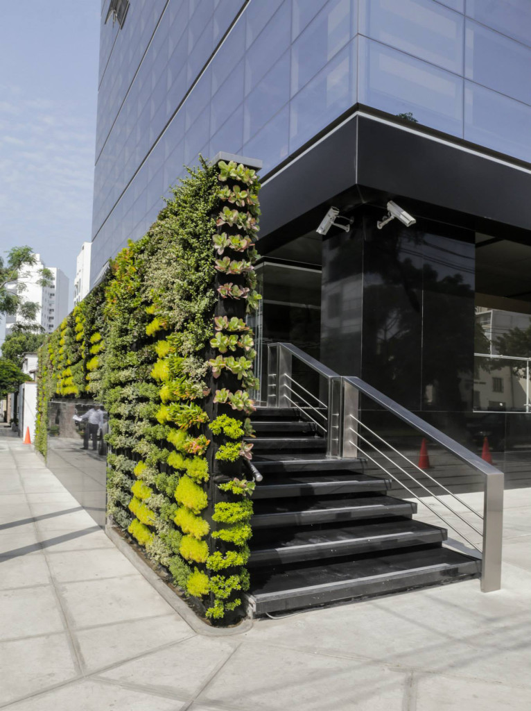

Un enfoque educativo para combatir el ruido
En los centros educativos urbanos, el ruido constante afecta la concentración y el bienestar de los estudiantes. Nuestra propuesta de implementación de jardines acústicos verticales tiene como objetivo principal reducir la contaminación sonora en escuelas, promoviendo espacios más tranquilos, saludables y sostenibles.

¿Dónde y cómo se instalan?
- Muros perimetrales del plantel
- Fachadas de aulas y auditorios
- Patios y áreas comunes
- Paneles móviles modulares en interiores

Fases del proyecto
- Evaluación del entorno y niveles de ruido
- Diseño personalizado del jardín vertical
- Selección de especies vegetales con propiedades acústicas
- Instalación profesional
- Monitoreo y mantenimiento participativo